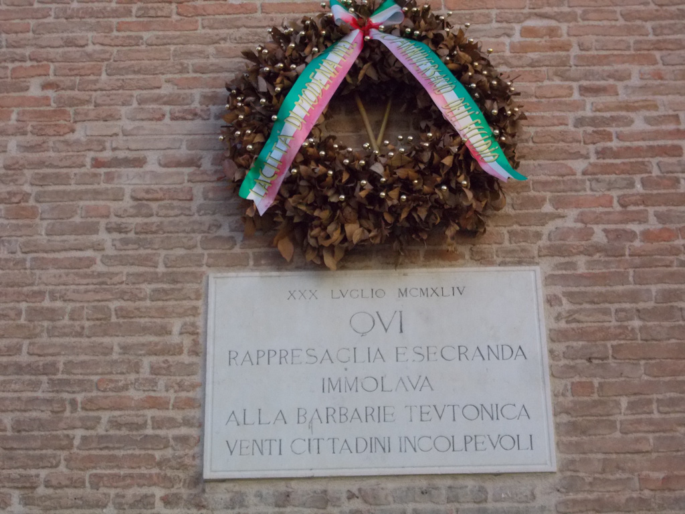

Lapidi in Piazza Grande
Questa lapide ricorda l’eccidio di Piazza Grande del 30 luglio 1944. Secondo la “Cronaca Pedrazzi”, il Comando delle SS di Bologna arriva a Modena nelle prime ore del pomeriggio di quel giorno d’estate per compiere una rappresaglia esemplare: dal momento che gli attentati dei gappisti e le azioni partigiane dei giorni precedenti hanno messo in seria difficoltà i nazi-fascisti, i responsabili dell’ordine pubblico di Bologna pretendono il rastrellamento di venti civili dalle strade e dai caffè del centro storico per procedere a una fucilazione sommaria. Le autorità modenesi propongono di prelevare le vittime dalle carceri di Sant’Eufemia per non diffondere il panico fra la gente e i nazisti accettano, ma vogliono compiere la missione in breve tempo: gli ostaggi sono scelti e condotti in Piazza Grande in tutta fretta, mentre l’allarme aereo fa correre i cittadini nei rifugi. Per limitare i rischi dei mitragliamenti, il plotone d’esecuzione fa distendere a terra le vittime in posizione prona, uccide con una raffica l’unico giovane che tenta la fuga ed elimina gli altri sventurati con un colpo alla nuca. I cadaveri vengono rimossi solo il giorno successivo.